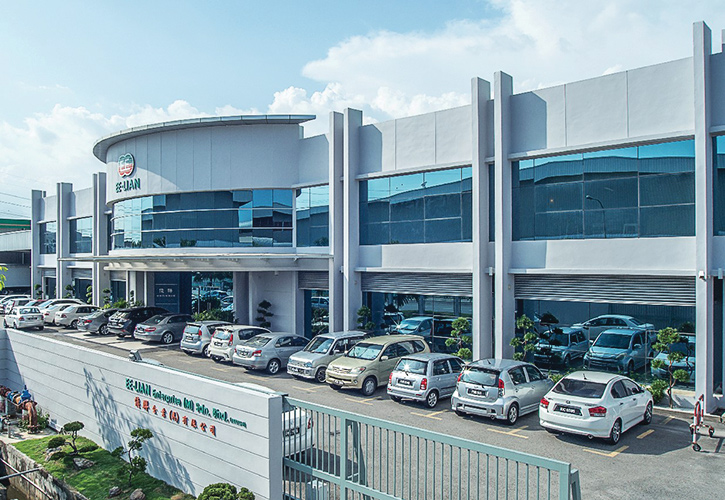

ABOUT US
Incepted in the year 2004, Miraj Pipes & Fittings Pvt. Ltd. is counted for offering top class quality Industrial Pipes, Industrial Pipe Fittings and HDPE Sprinklers. The company has attained the heights of success under the proficient headship of the CEO Mr. Jitender Singhal, who has 25 years of voluminous experience behind him in this domain.
Infrastructure :
Our state – of – the - art infrastructure is spread over more than 6 lacs Sq. Ft. area and is equipped with latest and technologically advanced machines to deliver small or bulk orders with excellence. We have in-house R&D facility to develop innovative products and Laboratory in order to provide products as per ISI standards. With total of 18 machines for PVC, CPVC, HDPE & Fittings, the company has a production capacity of 55640 MT.
We are ISO 9001:2008 Certified and offers RIGID PVC pipes & fittings, SWR pipes & fittings, Elastomeric pipes, Underground Sewerage Pipes, CPVC & UPVC plumbing pipes & fittings, HDPE pipes & fittings, Sprinkler pipes & Fittings, Conduit pipes & fitting, MDPE pipes, Column pipes , Blue Casing Pipes Lateral, Drip Irrigation System and solvent Cement for diverse application in agriculture, housing, industries etc. We recently have launched “MIRAJ Rain water harvesting system” & “Miraj Green House Tunnel” which adds more diversification to our product portfolio.
Production capacity - 55640 MT
UPVC Pipes/CPVC Pipes/SWR Pipes/Plumbing Pipes – 49866 MT
HDPE Pipe/Sprinkler – 3942 MT
PVC Fitting – 1832 MT

Quality :
We give prime importance to the quality of products manufactured by us, as quality is the basic criterion that manages to give us an edge in the market. Hence, we conduct third party inspections to closely scrutinize the products delivered by us right from the procurement of the raw material to the final dispatch to the clients.
Product Quality Certificates :
We have earned the following quality certificates for our products :
“IS 4985” for Potable Water in PVC Pipes
“IS 4984” for potable water in HDPE Pipes
“IS 13592” for Sewerage Pipe
“IS 14151 Part I to Part II” for Sprinkler System for Irrigation
“IS 15778 for Hot and cold Water system
“IS 9537” for Conduits for electrical installation
“IS 12786” for Lateral Pipes for Irrigation.
"IS 14333" for HDPE pipes for sewerage
Clientele :
Our commitment and dedication towards our work and uncompromising professionalism has helped us to garner a huge list of clients. We diligently work to understand the clients’ requirements and surpass their expectations in order to gratify them. Adopting ethical business practices, we efficiently cater to meet the exact specification of the clients.
Name of CEO : Mr. Jitender Singhal
Year of Establishment :2004
Nature of Business : Manufacturer, Exporter, Importer & Supply
Number of Employees : Above 400
Market Covered :India, Africa & Middle East Countries